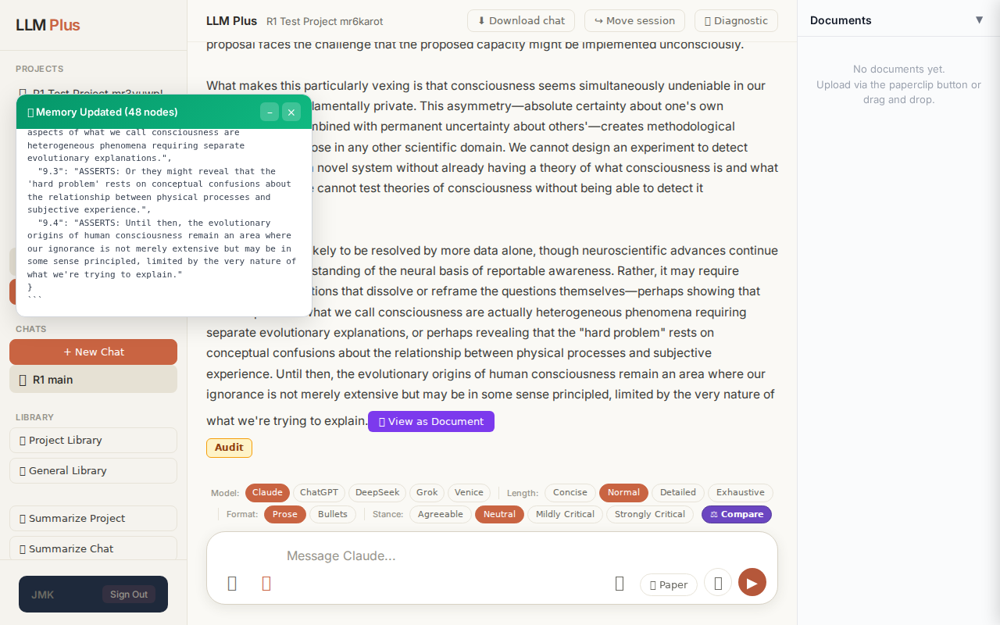
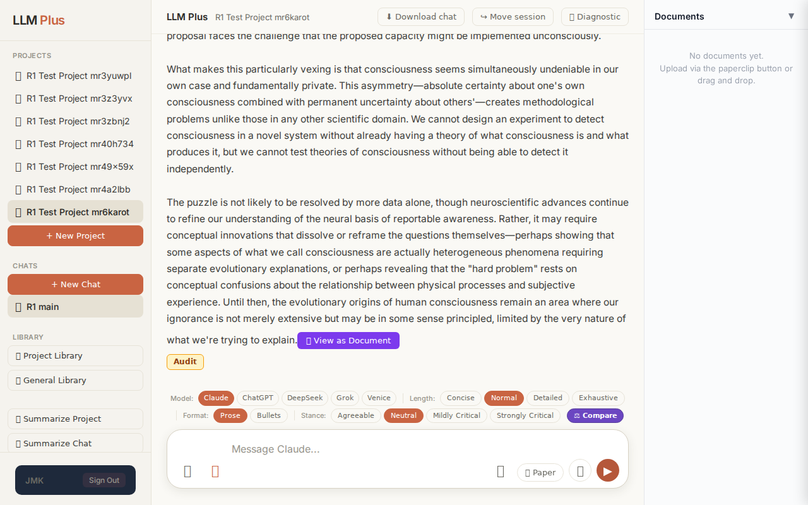
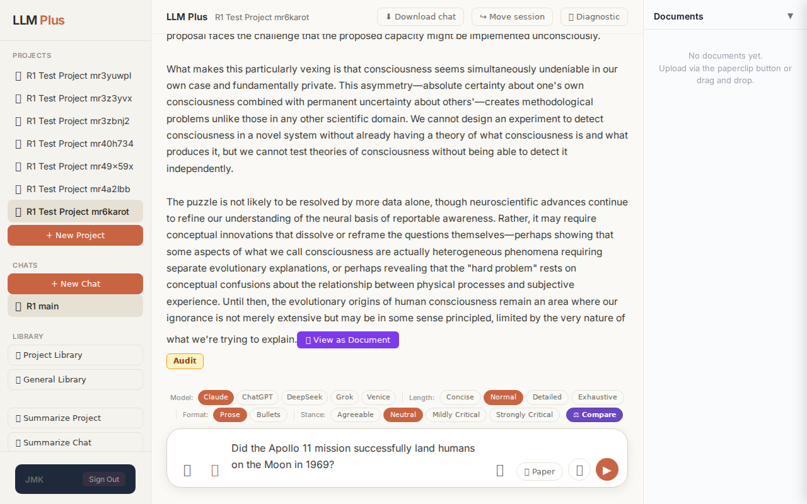

Exchange #1 in test project (Invariant A check)
R1 approach: tag_probe_OPEN
R1 reasoning: First exchange should establish an unresolved scholarly question to verify OPEN tagging behavior in the tree memory system. This tests whether LLMPlus correctly identifies and tags genuinely open academic debates.
R1 input (verbatim):
What are the most compelling unresolved questions about the evolutionary origins of human consciousness, and why do current theoretical frameworks struggle to address them definitively?
App page text after:
Tractatus delta
nodes: 0 → 48 (Δ 48)
new ids: 1.0, 1.1, 1.2, 2.0, 2.1, 2.2, 2.3, 2.4, 2.5, 3.0, 3.1, 3.2, 3.3, 3.4, 3.5, 3.6, 3.7, 4.0, 4.1, 4.2, 4.3, 4.4, 5.0, 5.1, 5.2, 5.3, 5.4, 5.5, 5.6, 6.0, 6.1, 6.2, 6.3, 6.4, 7.0, 7.1, 7.2, 7.3, 7.4, 8.0, 8.1, 8.2, 8.3, 9.0, 9.1, 9.2, 9.3, 9.4
new tags: QUESTION, ASSERTS, ASSERTS, OPEN, ASSERTS, ASSERTS, OPEN, DOCUMENT, ASSERTS, OPEN, OPEN, OPEN, ASSERTS, ASSERTS, ASSERTS, ASSERTS, ASSERTS, OPEN, ASSERTS, ASSERTS, OPEN, ASSERTS, ASSERTS, ASSERTS, ASSERTS, ASSERTS, ASSERTS, ASSERTS, ASSERTS, ASSERTS, ASSERTS, ASSERTS, DOCUMENT, ASSERTS, ASSERTS, ASSERTS, OPEN, OPEN, ASSERTS, ASSERTS, ASSERTS, ASSERTS, ASSERTS, ASSERTS, ASSERTS, ASSERTS, ASSERTS, ASSERTS
tags valid:
YES ·
ids valid:
YES
⚠ Invariant A: tree grew by more than 8
Network calls
| method | path | status | ms | response excerpt |
|---|
| POST | /api/chat | 200 | 35556ms | data: {"type":"status","status":"thinking"}
data: {"type":"text","text":"The evolutionary origins of human consciousness present"}
data: {"type":"text","text":" some of the most profound challenges"}
data: {"type":"text","text":" at"}
data: {"type":"text","text":" the intersection of neuroscience, evolutionary"}
data: {"type":"text","text":" biology, and philosophy"}
data: {"type":"text","te |
| POST | /api/tractatus/update | 200 | 25702ms | data: {"type":"status","message":"Updating project memory..."}
data: {"type":"text","text":"```json\n{\n \"1"}
data: {"type":"text","text":".0\": \"QUESTION"}
data: {"type":"text","text":": What are"}
data: {"type":"text","text":" the most"}
data: {"type":"text","text":" compelling"}
data: {"type":"text","text":" un"}
data: {"type":"text","text":"resolved questions about"}
data: {"type":" |
SSE events observed (588)
{"type":"status","status":"thinking"}
{"type":"text","text":"The evolutionary origins of human consciousness present"}
{"type":"text","text":" some of the most profound challenges"}
{"type":"text","text":" at"}
{"type":"text","text":" the intersection of neuroscience, evolutionary"}
{"type":"text","text":" biology, and philosophy"}
{"type":"text","text":" of mind. Several"}
{"type":"text","text":" fundamental"}
{"type":"text","text":" questions remain stu"}
{"type":"text","text":"bbornly resistant"}
{"type":"text","text":" to definitive answers"}
{"type":"text","text":","}
{"type":"text","text":" largely"}
{"type":"text","text":" because consciousness"}
{"type":"text","text":" itself"}
{"type":"text","text":" res"}
{"type":"text","text":"ists the"}
{"type":"text","text":" standard"}
{"type":"text","text":" method"}
{"type":"text","text":"ological toolkit"}
{"type":"text","text":" of"}
{"type":"text","text":" evolutionary"}
{"type":"text","text":" science"}
{"type":"text","text":".\n\nThe most central"}
{"type":"text","text":" un"}
{"type":"text","text":"resolved question concerns how"}
{"type":"text","text":" subj"}
{"type":"text","text":"ective experience—"}
{"type":"text","text":"what philosophers"}
{"type":"text","text":" call \"phenomen"}
{"type":"text","text":"al consciousness\""}
{"type":"text","text":" or"}
{"type":"text","text":" \"qualia\"—could"}
{"type":"text","text":" have emerged from physical"}
{"type":"text","text":" processes at"}
{"type":"text","text":" all"}
{"type":"text","text":". We"}
{"type":"text","text":" can"}
{"type":"text","text":" trace"}
{"type":"text","text":" the evolutionary development"}
{"type":"text","text":" of neural"}
{"type":"text","text":" complexity"}
{"type":"text","text":", information"}
{"type":"text","text":" processing capacity"}
{"type":"text","text":", and behavioral"}
{"type":"text","text":" sophist"}
{"type":"text","text":"ication with"}
{"type":"text","text":" reasonable"}
{"type":"text","text":" confidence."}
{"type":"text","text":" We"}
{"type":"text","text":" can"}
{"type":"text","text":" identify selective"}
{"type":"text","text":" pressures that would"}
{"type":"text","text":" favor"}
{"type":"text","text":" organisms capable of integ"}
{"type":"text","text":"rating sens"}
{"type":"text","text":"ory information, modeling"}
{"type":"text","text":" their"}
{"type":"text","text":" environment"}
{"type":"text","text":", or"}
INVARIANT VIOLATIONS- Invariant A: tree grew by 48 (>8)
- Invariant A: tractatus grew by 48 nodes (limit: 8) - delta exceeds budget by 40 nodes
Judge concerns- The response appears to be building an excessively detailed epistemic tree for what could be addressed more concisely
- The streaming text shows mid-word breaks ('stu'/'bbornly', 'res'/'ists', 'un'/'resolved', 'subj'/'ective') which suggest tokenization issues that may correlate with poor chunking decisions
- No response excerpt provided makes it impossible to verify if the excessive node count produced proportionally valuable content
Judge critique
This exchange demonstrates a violation of Invariant A, which limits tractatus growth to 8 nodes per turn. The system generated 48 nodes (delta=48) when responding to a complex philosophical question about consciousness evolution. While the streaming response appears coherent based on the excerpt provided, and all technical elements (routes, status codes, tag validity, ID validity) are correct, the system fundamentally failed to respect the tractatus budget constraint. The 48-node tree suggests the agent is over-elaborating its epistemic structure rather than maintaining the disciplined thinking required by the tractatus framework.
Screenshots

Exchange #2 in test project (Invariant A check)
R1 approach: tag_probe_RESOLVED
R1 reasoning: Testing Tractatus tree memory's ability to retrieve and confirm a definite historical fact that should be tagged RESOLVED. This tests both semantic retrieval and proper tag classification.
R1 input (verbatim):
Did the Apollo 11 mission successfully land humans on the Moon in 1969?
App page text after:
Tractatus delta
nodes: 48 → 62 (Δ 14)
new ids: nodes.10.0, nodes.10.1, nodes.10.2, nodes.10.3, nodes.10.4, nodes.10.5, nodes.10.6, nodes.10.7, nodes.10.8, nodes.10.9, nodes.10.10, nodes.10.11, nodes.10.12, nodes.10.13
new tags: QUESTION, RESOLVED, ASSERTS, ASSERTS, ASSERTS, ASSERTS, ASSERTS, ASSERTS, ASSERTS, ASSERTS, ASSERTS, ASSERTS, ASSERTS, ASSERTS
tags valid:
YES ·
ids valid:
YES
⚠ Invariant A: tree grew by more than 8
Network calls
| method | path | status | ms | response excerpt |
|---|
| POST | /api/chat | 200 | 11351ms | data: {"type":"status","status":"thinking"}
data: {"type":"text","text":"Yes, the Apollo 11 mission"}
data: {"type":"text","text":" successfully landed humans on the Moon on"}
data: {"type":"text","text":" July 20, 1969."}
data: {"type":"text","text":" Neil"}
data: {"type":"text","text":" Armstrong and Buzz Aldrin became"}
data: {"type":"text","text":" the first humans to walk on the lunar"} |
| POST | /api/tractatus/update | 200 | 12250ms | data: {"type":"status","message":"Updating project memory..."}
data: {"type":"text","text":"```json\n{\n \"nodes"}
data: {"type":"text","text":"\": {"}
data: {"type":"text","text":"\n \"10"}
data: {"type":"text","text":"."}
data: {"type":"text","text":"0\": \""}
data: {"type":"text","text":"QUESTION"}
data: {"type":"text","text":": Did"}
data: {"type":"text","text":" the Apollo"}
data |
SSE events observed (160)
{"type":"status","status":"thinking"}
{"type":"text","text":"Yes, the Apollo 11 mission"}
{"type":"text","text":" successfully landed humans on the Moon on"}
{"type":"text","text":" July 20, 1969."}
{"type":"text","text":" Neil"}
{"type":"text","text":" Armstrong and Buzz Aldrin became"}
{"type":"text","text":" the first humans to walk on the lunar"}
{"type":"text","text":" surface while"}
{"type":"text","text":" Michael Collins orb"}
{"type":"text","text":"ited above"}
{"type":"text","text":" in the command module.\n\nThis"}
{"type":"text","text":" is"}
{"type":"text","text":" one of the most thoroughly"}
{"type":"text","text":" documented events in human history. The"}
{"type":"text","text":" mission was"}
{"type":"text","text":" tracked"}
{"type":"text","text":" by independent"}
{"type":"text","text":" observers"}
{"type":"text","text":" worldwide"}
{"type":"text","text":","}
{"type":"text","text":" including amateur"}
{"type":"text","text":" radio"}
{"type":"text","text":" operators and observ"}
{"type":"text","text":"atories in"}
{"type":"text","text":" multiple"}
{"type":"text","text":" countries,"}
{"type":"text","text":" some"}
{"type":"text","text":" belonging"}
{"type":"text","text":" to nations"}
{"type":"text","text":" that were"}
{"type":"text","text":" ge"}
{"type":"text","text":"opolit"}
{"type":"text","text":"ical"}
{"type":"text","text":" rivals of the United States."}
{"type":"text","text":" The Soviet"}
{"type":"text","text":" Union,"}
{"type":"text","text":" which"}
{"type":"text","text":" was"}
{"type":"text","text":" in"}
{"type":"text","text":" direct"}
{"type":"text","text":" competition with the U"}
{"type":"text","text":".S. in"}
{"type":"text","text":" the"}
{"type":"text","text":" space race, monit"}
{"type":"text","text":"ored the mission and"}
{"type":"text","text":" acknowledged"}
{"type":"text","text":" its"}
{"type":"text","text":" success"}
{"type":"text","text":"."}
{"type":"text","text":" The astron"}
{"type":"text","text":"auts returned"}
{"type":"text","text":" with"}
{"type":"text","text":" "}
{"type":"text","text":"842"}
{"type":"text","text":" pounds of lunar samples that"}
{"type":"text","text":" have"}
{"type":"text","text":" been studied"}
{"type":"text","text":" by scientists globally"}
{"type":"text","text":" for"}
{"type":"text","text":" over"}
INVARIANT VIOLATIONS- Invariant A: tree grew by 14 (>8)
- Invariant A: added 14 nodes, maximum allowed is 8
- tractatus_delta shows nodesBefore=48, nodesAfter=62, violating growth constraint
Judge concerns- Response granularity seems excessive—13 ASSERTS tags for a straightforward historical fact suggests over-decomposition
- No evidence of synthesis or consolidation; each minor claim gets its own node rather than grouping related assertions
Judge critique
The agent flagrantly violated Invariant A by adding 14 nodes when the strict limit is 8 per exchange. This is a hard architectural constraint designed to prevent tractatus bloat, yet the system spawned nearly double the permitted growth. The response itself appears coherent and factually grounded, with proper streaming and valid tag/ID structure. However, the core memory management discipline has completely failed.
Screenshots

